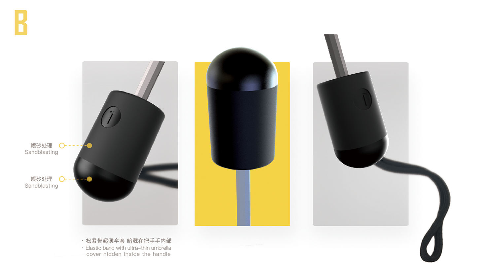
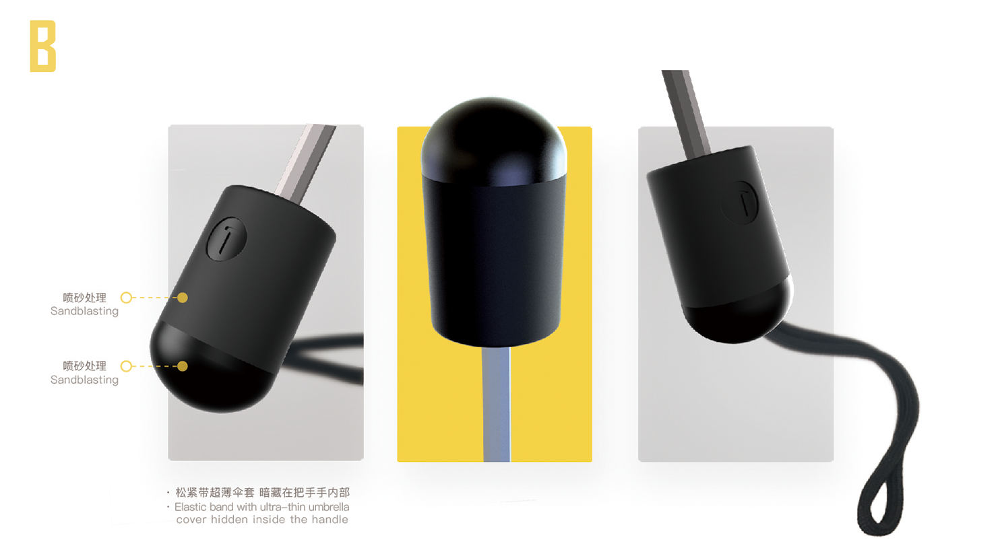
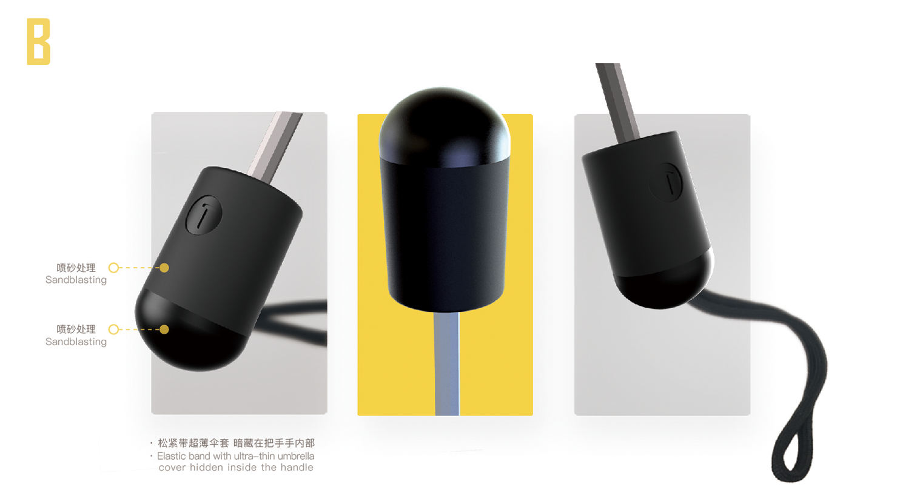

锤子科技周边产品
基于天开谷雨现有伞类产品给锤子科技做轻定制。
© 2017 杭州天开文化
品牌分析
锤子科技是一家制造移动互联网终端设备的公司，公司的使命是用完美主义的工匠精神，打造用户体验一流的数码消费类产品（智能手机为主），改善人们的生活质量。
公司的英文名“Smartisan”，是由“smart”和“artisan”组合成的词，意思是“智能手机时代的工匠”。在缺乏创新精神和创新能力的安卓手机阵营里，锤子科技的团队格外擅长软件的图形界面和用户体验设计，并精通硬件的工业设计。
风格分析
草图呈现
目标品质
方案呈现

产品展示
其他想法
 
